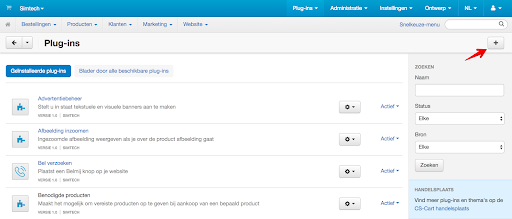
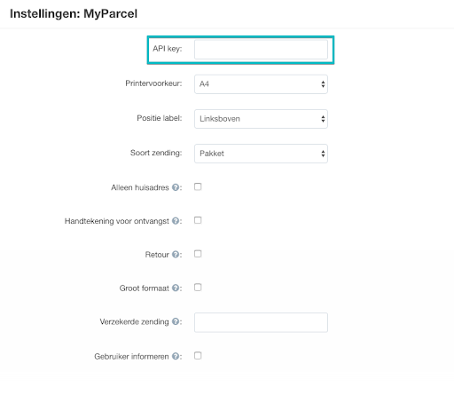
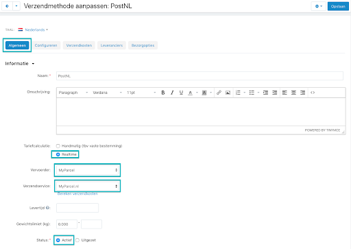
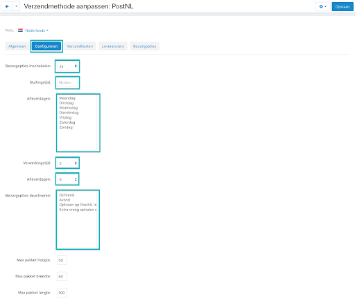
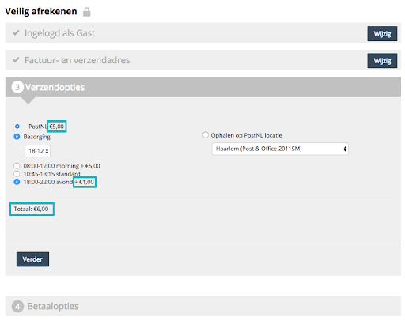
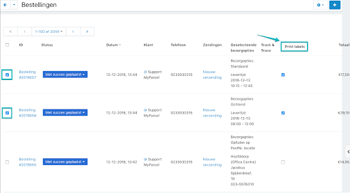
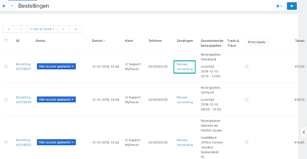
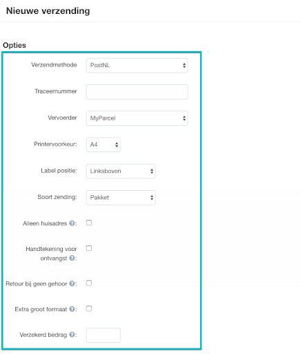

Inleiding
Deze handleiding beschrijft de functionaliteiten van de MyParcel plugin en hoe je de MyParcel plugin in jouw webwinkel kunt installeren.
Met deze CS Cart plugin kun je drie soorten MyParcel zendingen aanmaken:
- Pakket zendingen waarbij het mogelijk is om het op te halen bij een PostNL locatie
- Brievenbuspakje
- Ongefrankeerd label
Plugins van derden die we ondersteunen
Let op: Wij leveren geen support op deze plugins!
CS-Cart is een open-source platform. Dit houdt in dat updates van CS-Cart niet door MyParcel zijn te beïnvloeden. Aangezien de MyParcel plugin diverse aanpassingen doet in CS-Cart, bestaat er de mogelijkheid dat er bij een update bepaalde functionaliteiten niet meer gaan werken van de MyParcel plugin.
De huidige versie van de MyParcel plugin ondersteund op dit moment CS-Cart versie 4.8.2.
1. Installatie
1.1 Nieuwe installatie
Wij adviseren de installatie altijd eerst op een testomgeving uit te voeren en een back-up te maken van jouw webshop voor je met de plugin in de live webshop gaat. CS-Cart is een open-source platform waardoor er de mogelijkheid bestaat dat er conflicten met andere plugins zijn.
- Download de laatste versie bovenaan de pagina.
- Ga in CS-Cart naar Plug-ins → Plugins beheren en klik vervolgens op het plusje om een nieuwe module toe te voegen. Selecteer met behulp van de knop "Lokaal" het bestand dat zojuist is gedownload.
- Als het bestand is geselecteerd dan klik je op de knop Upload & installeer. 
- De plugin is nu succesvol geïnstalleerd in jouw CS-Cart omgeving!
- Mocht er na de Upload & installeer niks gebeuren? Klik op annuleer en ververs de pagina. De MyParcel plug-in dient nu in het overzicht te zien zijn.
1.2 Updaten bestaande installatie
Beschrijf hier hoe een plugin kan worden geüpdatet.
1.3 Veelgestelde vragen over de installatie
Zet hier de veel gestelde vragen omtrent de installatie
2. Configuratie
2.1 Standaard instellingen
Alvorens er gestart kan worden met de plugin, dienen er eerst een aantal standaard instellingen te worden doorlopen. Allereerst dient een API-key toegevoegd te worden.
Deze API-key kun je vinden in jouw MyParcel account onder Shopinstellingen -> Algemeen
API key
Kies vervolgens jouw favoriete printervoorkeur, positie, soort zending en standaard verzendopties.
Algemeen
Onder het kopje Algemeen kunnen diverse instellingen worden aangepast. Voor de MyParcel plugin is het noodzakelijk om de tariefcalculatie op Realtime te zetten, de vervoerder op MyParcel en de verzendservice op MyParcel.nl.
Houd er rekening mee dat de status uiteindelijk op Actief moet staan om deze verzendmethode zichtbaar te maken in de checkout voor jouw klanten.
Configureren
Onder het kopje Configureren zijn een aantal MyParcel gerelateerde instellingen om bezorgopties aan te bieden voor jouw klanten.
Met de optie Sluitingstijd wordt de tijd (hh:mm) gevraagd tot wanneer de consument op de dag kan bestellen zodat jij nog de mogelijkheid hebt om deze bij PostNL af te geven.
Met Afleverdagen worden de dagen bepaald wanneer jij de pakketten aanlevert bij PostNL. Lever je elke dag pakketten aan bij PostNL dan kunnen alle dagen geselecteerd worden middels de Shift knop op jouw toetsenbord.
De Verwerkingstijd houdt in hoeveel dagen jij als webwinkelier nodig hebt om het pakket aan te leveren bij PostNL. Lever jij de pakketten altijd de volgende dag aan? Zet de Verwerkingstijd dan op 0.
De Afleverdagen zijn het aantal dagen dat de consument in de toekomst kan kiezen (maximaal 14 dagen). Hiermee wordt de consument zeer flexibel in de bezorgdag.
Belangrijk
PostNL houdt de pakketten niet vast op een distributiecentrum. Het is dus de verantwoording van de webwinkel om de order op het juiste moment aan te leveren. Is er door de consument bijvoobeeld gekozen voor 3 juni? Dan dient de order op 2 juni te worden verwerkt en worden aangeleverd bij PostNL.
Middels de optie Bezorgopties deactiveren kunnen er specifieke bezorgopties uitgeschakeld worden. Is het bijvoorbeeld niet gewenst om een ochtenlevering aan te bieden voor jouw klant? Dan kan deze optie aangevinkt worden middels de Shift knop op jouw toetsenbord.
Bezorgopties
Onder het kopje Bezorgopties kunnen de kosten worden opgegeven van de zojuist ingevoerde bezorgopties bij het kopje Configureren. De bedragen dienen in centen te worden opgegeven en worden vervolgens aan jouw klant getoond in de checkout. Laat je het veld leeg? Dan worden de bedragen getoond die MyParcel rekent aan jou.
Belangrijk
De bedragen die hier worden ingevoerd zijn additioneel op de reeds ingevoerde verzendkosten. Zijn de standaard verzendkosten bijvoorbeeld €5,00 en een avondlevering €1,00? Dan zijn de totale verzendkosten €6,00.
Tijdens het afrekenen zal dit er als volgt uit komen te zien in jouw webshop
2.2 pagina 2
123123123123123
2.3 pagina 3
123123123123123
2.4 Pagina 4
Beschrijf alle opties op pagina 4.
2.5 Veelgestelde vragen over de configuratie
Instellen PostNL verzendmethode
Na de standaard instellingen dient de PostNL verzendmethode te worden ingesteld. Middels deze verzendmethode worden de shipping kosten en bezorgopties als ochtend-, avondlevering en ophalen bij PostNL locaties ingesteld.
3. Gebruik plugin
Wanneer een bestelling binnen komt in CS-Cart, dan dient hier een verzendlabel van gemaakt te worden. Het creëren van verzendlabels kan vanuit het bestellingenoverzicht zowel als enkele bestelling als in bulk. Bij het aanmaken van de bestelling zal er rekening worden gehouden met eventueel gekozen bezorgopties van de consument en de Standaard instellingen.
3.1 Aanmaken van één/meerdere verzendlabel
Wanneer er bestellingen zijn binnen gekomen dan is er de mogelijkheid om deze direct te verwerken tot een verzendlabel n.a.v. de instellingen die zijn opgegeven tijdens de Standaard instellingen. Dit kan zowel enkel als in bulk. Vink de gewenste bestellingen aan en klik vervolgens op de button Print labels.
3.2 Aanmaken meerdere verzendlabels
Beschrijf hier hoe je meerdere verzendlabels aanmaakt.
3.3 Aanpassen van een enkele zending
Is er bij een bestelling iets dat gewijzigd moet worden? Denk hierbij bijvoorbeeld aan de Standaard instellingen die gewijzigd moeten worden? Dan kan dat door op de knop Nieuwe verzending te klikken.
In dit overzicht is het mogelijk om de printervoorkeur, label positie, soort zending en de verschillende verzendopties te wijzigen.
3.4 Checkout
Beschrijf hier hoe de consument de checkout gebruikt.
3.5 Veelgestelde vragen over het gebruik van de plugin
Zet hier de veel gestelde vragen omtrent het gebruik van de plugin.